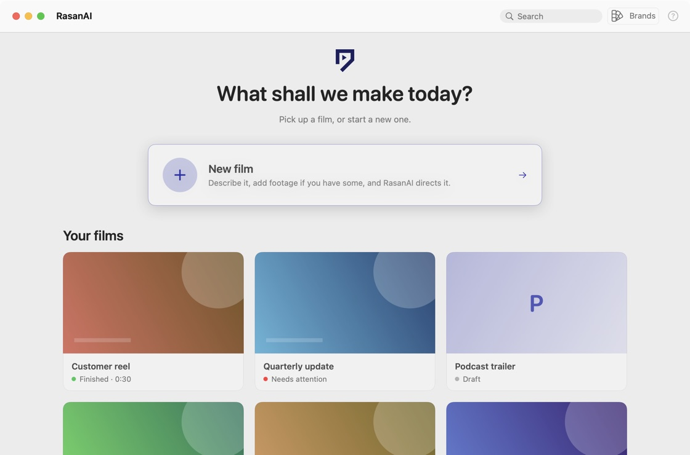
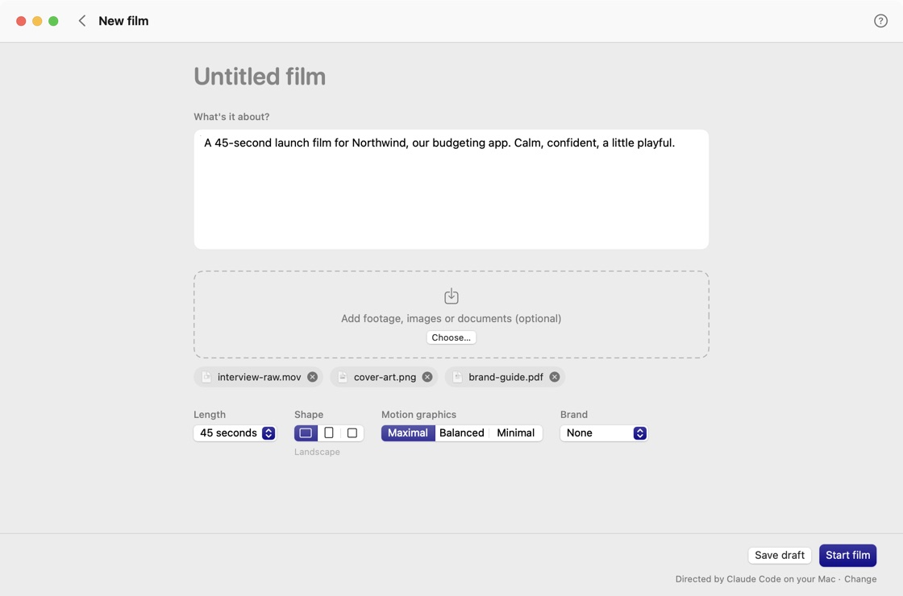
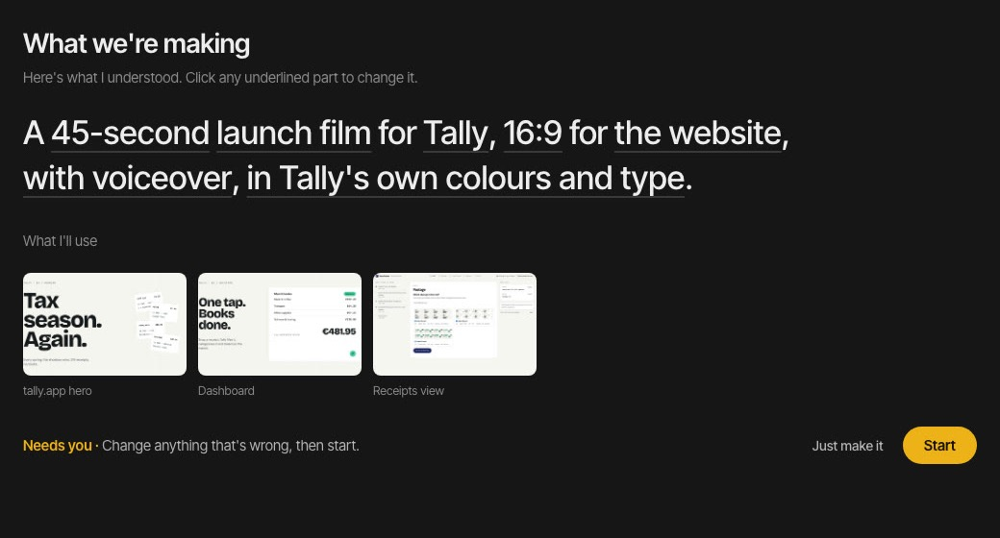
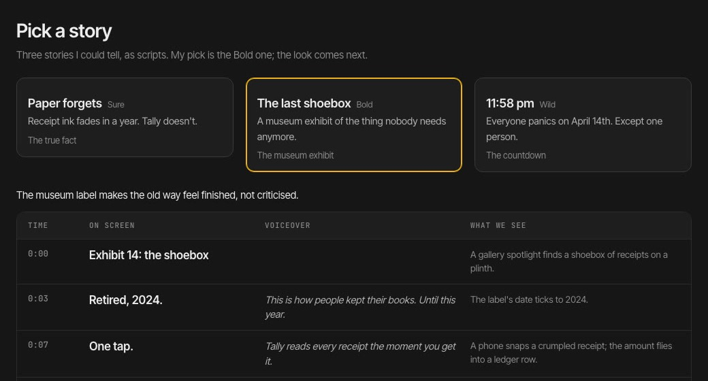
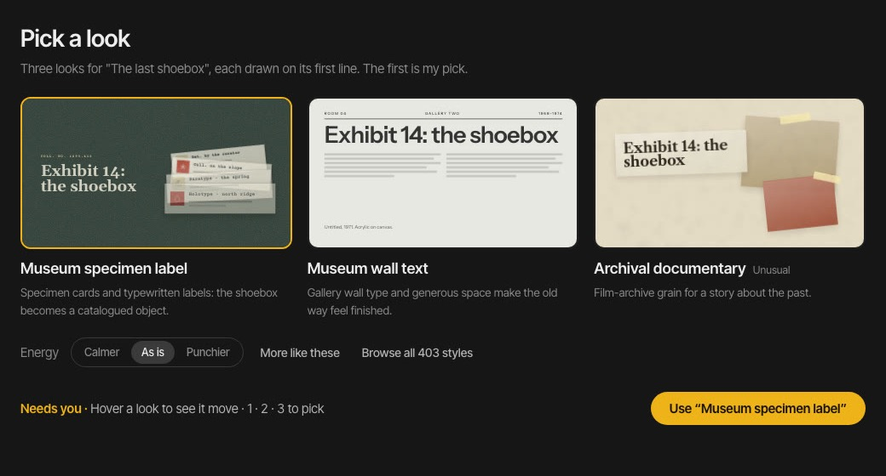
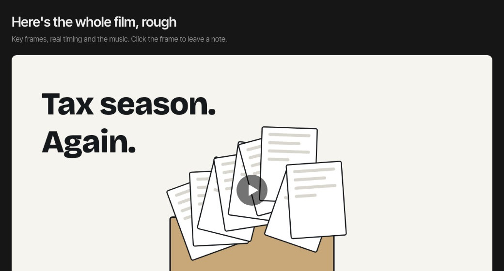
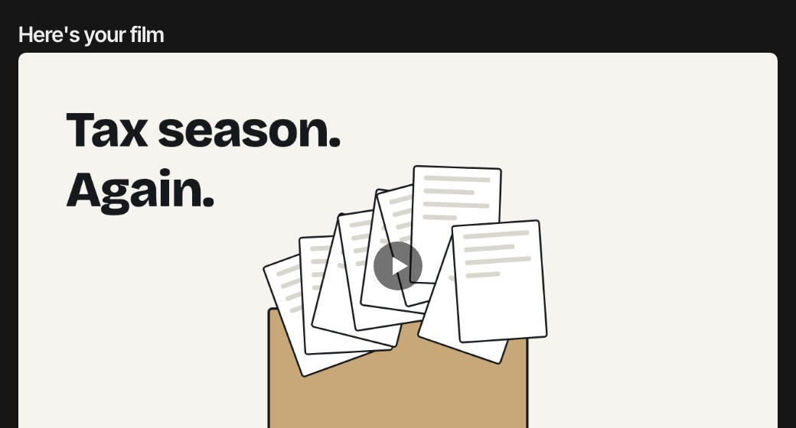
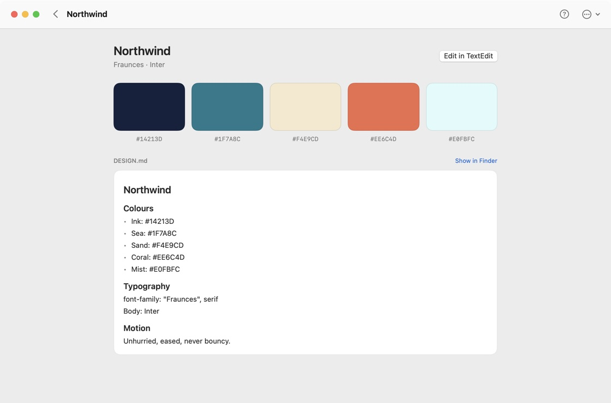
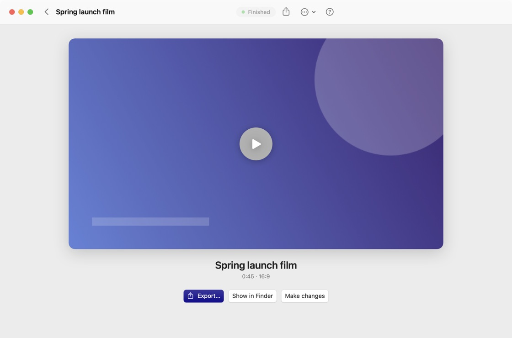

RasanAI Studio for Mac
Describe a film.
Direct it from there.
A sentence and your footage go in. A finished film comes out. In between, RasanAI asks for your taste at five moments that matter.

Screens from the app, with sample projects.
New film
Start with
a sentence.
One page. Say what the film is about, and add whatever you have: footage, images, a brief, a brand guide.
- Drop in your material. Clips, stills and documents become part of the story, not an afterthought.
- Choose a length and a shape. Landscape, portrait or square, at the running time you need.
- Set how much moves. Motion graphics at Maximal, Balanced or Minimal.

Five calls
Make five calls.
Skip the rest.
RasanAI decides the craft: scenes, pacing, motion, transitions, music and sound. You decide what makes the film yours, and see it at every step.

Call 01Brief
Confirm the sentence. One line you can edit, and what RasanAI understood from it.

Call 02Story
Pick one of three. Three scripts, written from your product's truth. Choose, or ask for another take.

Call 03Look
Pick one of three. Three design systems made for that story, each drawn live on its first line.

Call 04Animatic
Watch the rhythm. The whole film, rough, with music. Pin a note to any moment.

Call 05Final
Review. Export. The finished film, with your notes and every version kept.
The review rooms inside each film.

Brands
Your brand,
kept as a file.
A brand is a folder with a DESIGN.md: colours, type, logo. Pick one, and every film is drawn in it.
It is plain text, so you can edit it anywhere, keep it in version control, and hand it to a teammate.
Footage reels
Reels from
your footage.
Point it at a folder of clips. RasanAI cuts them into a reel and works motion into every part of it.
- OverlaysTitles and callouts that sit on the footage, timed to it.
- Framed shotsClips placed in frames, devices and layouts, not just full screen.
- Caption boxesWords that arrive with the speech and stay readable.
- Motion graphicsCards and moves between clips, turned up as far as you like.
What it makes
Films with a
point of view.
Launch films, explainers, product and PR videos, brand films, music videos, reels and motion graphics. Real 3D where it helps.


Design specimens and test frames, not finished customer films.
Explore the style library →Finished
Watch it. Export it.
Play the film right in the app, then export it. If something is off, say so and RasanAI makes the change.

What you need
- An Apple Silicon Mac running macOS 14 or newer.
- Claude Code or OpenAI Codex, installed and signed in. Usage counts toward your own plan.
- FFmpeg and the HyperFrames tools, which render the film.
The first time you open it
This beta is ad-hoc signed and not yet notarized by Apple, so macOS will ask you to confirm.
- Drag RasanAI Studio into Applications.
- Right-click the app and choose Open.
- Or go to System Settings → Privacy & Security and choose Open Anyway.
After that, signed updates arrive on their own, checked every 5 hours.
A community beta, honestly. The app is new and the real-agent generation flow is still in beta and not fully verified. Expect rough edges, and please tell us about them.
Prefer the terminal?
RasanAI is also
an agent skill.
The same director, without the app. Add it to your agent, then ask for a film.
Install options and setup →npx skills add Sibhimanyu/rasanai --skill rasanaiThen, in your agent
/rasanai make a 45s launch film for https://tally.app